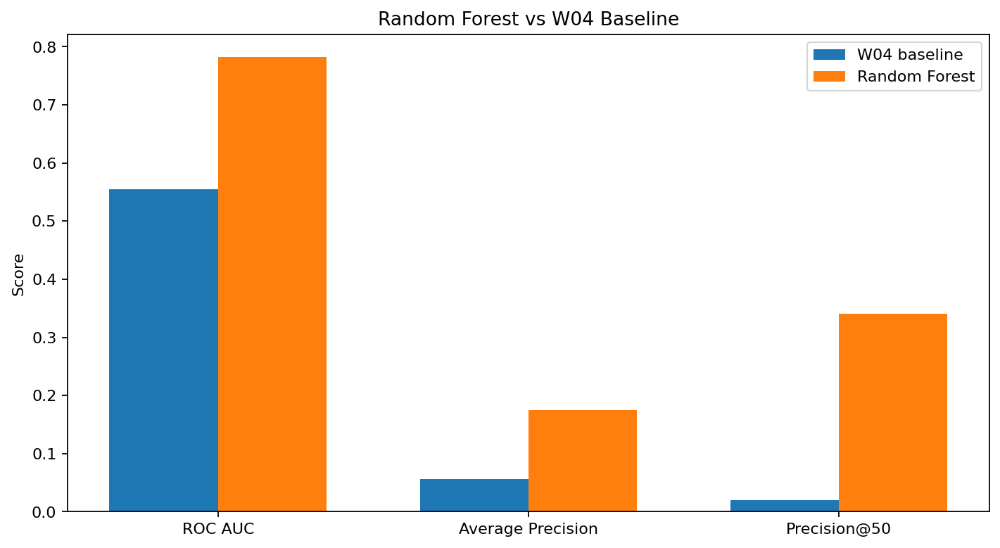
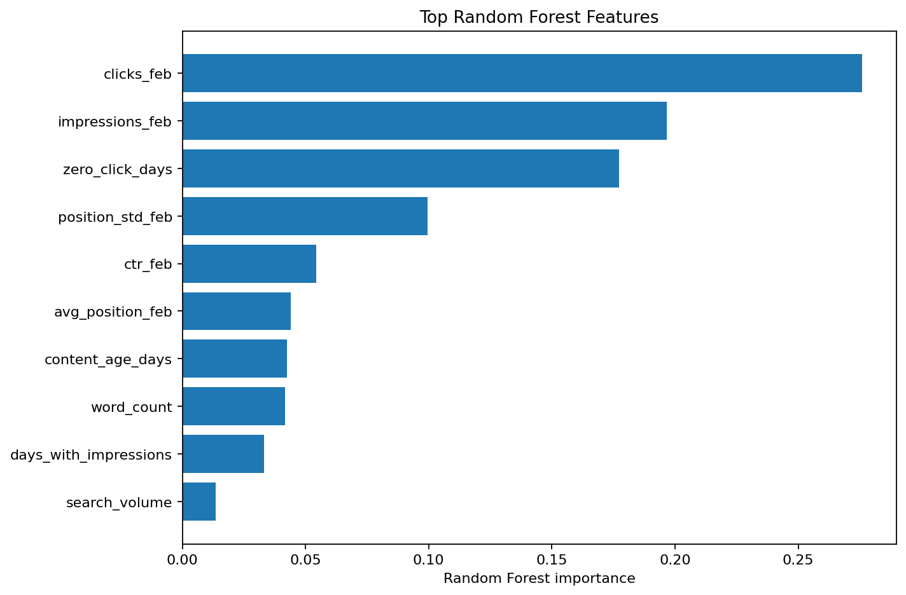
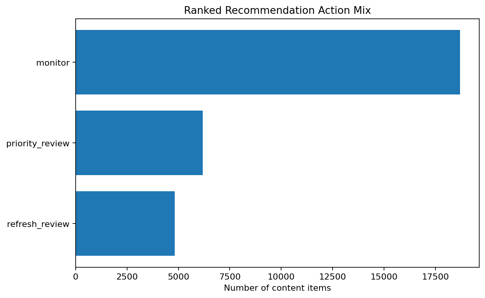

FlyRank ML Internship · Search Intelligence Capstone
Predicting Search Visibility Loss: A Client-Held-Out Content Risk Ranking Model
A repeatable decision-support workflow for prioritizing content review from measured February search signals.
Abstract
This study asks whether February search-performance and content signals can identify content items at higher risk of recording zero measured GSC clicks in March. A Random Forest model was trained using February 2026 signals and evaluated on clients that were completely held out from training. On the held-out validation set, the Random Forest achieved a ROC AUC of 0.778, average precision of 0.172, and Precision@50 of 0.280, compared with 0.554, 0.057, and 0.020 for the W04 hand-written baseline. The strongest model features were February clicks, impressions, zero-click days, position variability, and CTR, indicating that recent search-performance and consistency signals were useful for the tested ranking task. The resulting scores are intended as decision-support signals for prioritizing content review, not as causal explanations of search performance or guarantees that refreshing a page will improve outcomes.
1. Introduction / Problem Statement
Search teams may have more content items to review than they can manually inspect. The decision supported here is which eligible content items should be reviewed first because their February search signals suggest a higher risk of recording zero measured GSC clicks in March.
This is a prioritization problem, not a claim about Google's ranking system. The goal is to produce a ranked decision-support queue that helps a reviewer spend limited review time on pages with the strongest measured risk signals.
Research question: Can February search-performance and content signals rank content items by their likelihood of recording zero measured GSC clicks in the following month, and does a Random Forest improve this ranking over the W04 hand-written baseline?
2. Data
The analysis uses the FlyRank ML Internship warehouse release available through the provided Hugging Face dataset. It combines the daily content-performance table with the content dimension table.
The feature window is February 1–28, 2026. February signals are aggregated to one row per client × content item. The label window is March 1–31, 2026, and went_dark is defined as zero measured GSC clicks during March.
Eligibility required at least 100 February impressions, at least 3 February clicks, usable GSC data, and content published by February 28. March performance is used only to construct the label. Client names, domains, URLs, keywords, private queries, credentials, and other unsafe public-facing fields are not exposed.
3. Methodology
Features
February features include impressions, clicks, CTR, average position, position variability, days with impressions, zero-click days, content age, search volume, competition, CPC, word count, and backlinks.
Label
went_dark = 1 when measured GSC clicks in March equal zero. March impressions and clicks are never model inputs.
Validation
The split is client-held-out: 24 clients are used for training and 7 completely unseen clients for validation. Client overlap is zero. Training and validation positive rates are 4.6% and 5.5%.
Leakage control
The feature window ends February 28 and the label window starts March 1. Future-window fields are excluded from model inputs, and validation clients are completely separated from training clients.
4. Results
| Model | ROC AUC | Average Precision | Precision@50 |
|---|---|---|---|
| W04 hand-written baseline | 0.554 | 0.057 | 0.020 |
| Random Forest | 0.778 | 0.172 | 0.280 |
On the same client-held-out validation set, the Random Forest outperformed the hand-written baseline on all three reported ranking metrics. Precision@50 increased from 2.0% to 28.0%.


The leading features were February clicks, February impressions, zero-click days, position variability, CTR, average position, content age, word count, days with impressions, and search volume.
5. Limitations & Honest Framing
- The outcome is zero measured GSC clicks, not proof that a page had no real-world traffic.
- The analysis universe is filtered to content with sufficient February impressions and clicks.
- Random Forest feature importance does not establish causality.
- A high model score does not identify why a page may lose visibility or guarantee that an intervention will work.
- The validation covers one February-to-March window and client-held-out design.
The results are best treated as observed, directional decision-support evidence.
6. Ranked Recommendations
The model scores all 29,700 eligible content items and produces a ranked review queue with human-readable actions and reason codes.
| Action | Items | Purpose |
|---|---|---|
| Monitor | 18,739 | Keep under observation without immediate intervention. |
| Priority review | 6,031 | Review first because the model assigns higher measured risk. |
| Refresh review | 4,930 | Review for possible content refresh where supporting signals justify it. |

The top-ranked recommendations are dominated by pages with many zero-click days, often combined with low February click volume and weak search visibility. These are prioritization cues for human review, not automatic diagnoses.
7. Reproducibility
The complete analysis is implemented in the capstone notebook. It loads the provided warehouse through DuckDB, constructs February features, derives the March outcome, performs client-held-out validation, trains the Random Forest, compares it with the W04 baseline, and generates the ranked recommendation queue and figures.
Capstone notebook · Repository
The generated recommendation artifact is work/outputs/capstone_ranked_recommendations.csv. The Hugging Face read token is supplied interactively and is not stored in the notebook.
8. Acknowledgments & Data Credit
Built on the FlyRank ML Internship dataset.
This capstone was completed as part of the FlyRank ML Internship and uses the provided Search Intelligence warehouse release for educational and research purposes.
9. Communication Outputs
5-minute demo outline
- Problem: prioritize content review.
- Data: February signals, March outcome, 29,700 items, 31 clients.
- Model: compare the W04 baseline with a client-held-out Random Forest.
- Signals: explain leading feature importance.
- Recommendations: show the ranked queue and action levels.
- Honest framing: decision support, not causality or a claim about Google's algorithm.
Social-Post Cut
Built a search-intelligence capstone that ranks content items by measured risk of recording zero GSC clicks in the following month. A Random Forest evaluated on completely held-out clients achieved 0.778 ROC AUC and 0.280 Precision@50, compared with 0.554 and 0.020 for the hand-written baseline. The result is a practical review queue rather than a causal claim about search rankings.
Employer-Facing Summary
I built a repeatable search-intelligence pipeline that aggregates February content signals, validates a Random Forest on completely held-out clients, and produces a ranked content-review queue. The model improved Precision@50 from 2.0% for the hand-written baseline to 28.0% on the same validation set. The project demonstrates practical skills in data contracts, leakage control, feature engineering, grouped validation, model evaluation, and decision-support ranking.